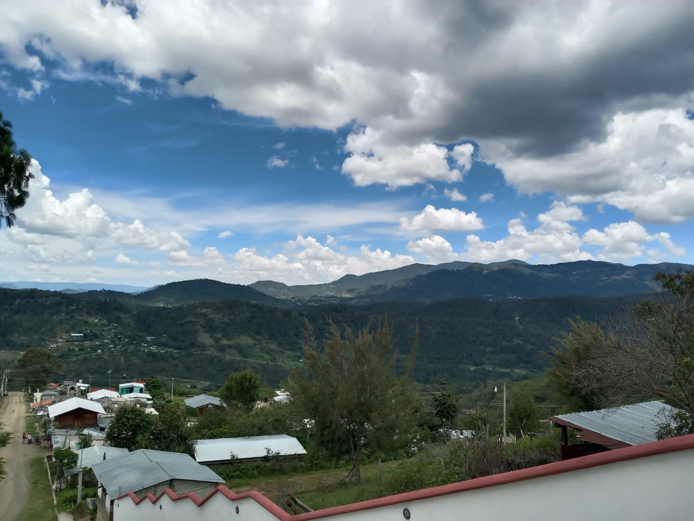

|
| |
 |
La localidad de Juan Escutia Cuquila pertenece al Municipio de Heroica Ciudad de Tlaxiaco (Estado de Oaxaca). Hay 95 habitantes y está a 2,253 metros de altura. En la lista de los pueblos más poblados de todo el municipio, es el número 44 del ránking. |